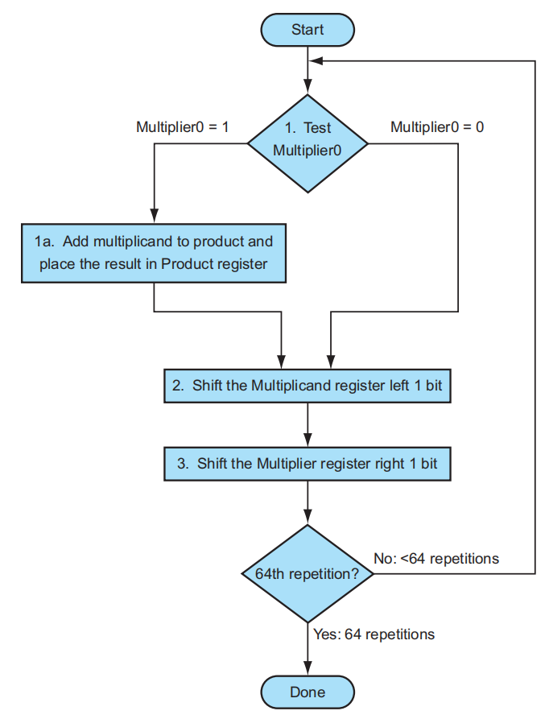
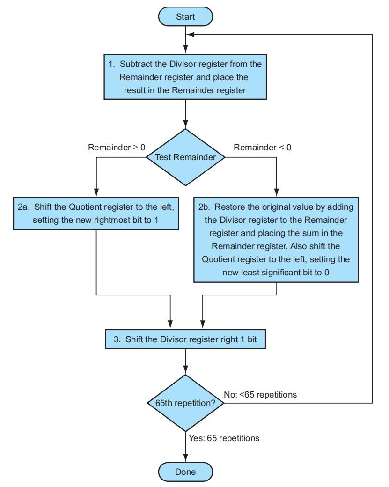
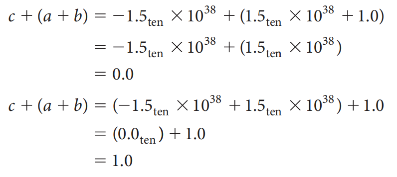

Chap 3: Arithmetic for Computer⚓︎
约 7827 个字 19 行代码 预计阅读时间 39 分钟
Prerequisite⚓︎
这一章涉及到很多数逻部分的知识，如果有点忘记的话可以点开下面的链接去回顾一下，下面就当大家都明白这些东西了。
Overflow⚓︎
在加法或减法的运算中，溢出(overflow) 是我们常常会遇到的问题。下面总结一下（带符号数的）溢出会 / 不会出现的情况：
- 加法
- 不会溢出：两个符号不同的操作数相加
- 可能会溢出：两个正数 / 两个负数的相加
- 减法
- 不会溢出：两个符号相同的操作数相减
- 可能会溢出：正数 - 负数 -> 负数？ 负数 - 正数 -> 正数？
溢出情况的表格总结：

对于常用于表示内存地址的无符号数，一般会无视溢出情况，但是通常编译器会发现无符号数的溢出：当两个数的和小于这两个数时，或者当两个数的差大于这两个数时，溢出便发生了。
对于带符号数，就有各种各样的应对方式了：
- ALU 的溢出侦测（下面会提到
） ，它会产生异常 (exception)（或者叫做中断） - 将指令地址保存在特定的寄存器 EPC 上
- 跳转到操作系统的特定例程：纠正程序、返回错误代码、或者中止程序
具体的加减法实现依靠 ALU，下面我们将会从零开始搭建 ALU~
Constructing a Basic ALU⚓︎
ALU(arithmetic logic unit，算术逻辑单元 ) 用于执行计算机各种类型的算术（加、减等）或逻辑（与、或等）运算。由于 RISC-V 寄存器是 64 位宽的，因此我们需要设计 64 位宽的 ALU——但我们先从 1 位的 ALU 开始构造。
A 1-Bit ALU⚓︎
我们希望这个 1 位的 ALU 能够实现：
- AND、OR 运算 -> 1 个与门和 1 个或门就可以搞定了
注：中间这个圆角矩形代表多路选择器，Operation 表示选择输入
- 加法运算 -> 全加器
实现细节（如果忘记的话可以看一眼）
- 还要一个多路选择器 (multiplexor)（在第一张图展示出来了
） ，用于挑选其中一种运算
将它们组装起来，我们就可以得到一个最基本的 1 位 ALU 了！

A 64-Bit ALU⚓︎
现在我们手边有了 1 位的 ALU，要想构建一个 64 位的 ALU，很自然的想法是：将这些 1 位 ALU（可看作黑箱，此时我们并不需关心底层的实现细节）一个个连起来，而连接的部分位于一个 ALU 的进位出 (CarryOut) 和它的下一位（更高位）的进位入 (CarryIn)。这样的话，单个的进位就会一位位向上传，从最低位一直到最高位，因此我们把这种加法器称为行波加法器 (ripple carry adder)，最终效果如下图所示：

在这个 ALU 的基础上，我们还可以添加更多比较基础的功能：
（1）实现减法操作
根据数逻的经验，我们已经知道：
- 减去一个数 = 加上这个数的补码
- 负数的补码 = 它的反码 + 1
- 负数的反码 = 原码按位取反
所以只需要在原来 ALU 的基础上做一些小小的改变，我们便能实现减法操作了：

可以看到，这里给输入 B 加了一个非门和一个 MUX，并且新增一个输入Binvert，用于决定 B 是否应该按位取反（得到 B 的反码
（2）实现或非 (NOR)运算。
由德摩根定律，\(\overline{a + b} = \overline{a} \cdot \overline{b}\)，所以只要让输入 a 像输入 b 一样能够选择取反，并配合与运算，就可以实现或非运算了：

Tailoring the 64-Bit ALU to RISC-V⚓︎
对于 RISC-V 的 ALU 而言，这样的设计还不够完善，还缺少一些可用的指令——我们将补充 set less than( slt ) 指令和 branch if equal( beq ) 指令（这两个指令都与比较运算相关
先来看slt指令，它的功能是比较两个数rs1和rs2的大小，如果rs1 < rs2则返回 1，否则返回 0。为了增加这个功能，
- 首先得扩充 MUX 的输入脚，让它接受第 4 个输入
- 然后，我们引入一个输入脚
Less，让它直接与 MUX 的第 4 个输入脚相连，它的值便代表slt指令的返回值
- 对于一个 64 位的 ALU，我们只需要用到 1 个 Less 输入即可，因此除了第一位上的 Less，让其余位对应的 Less 的值均为 0
- 那么
Less的值从何而来呢？我们将a < b的比较运算转化为a - b < 0的减法运算（减法运算已设计在 ALU 内） ，然后将减法结果的符号位传给Less就 OK 了，因为符号位的值正好对应slt指令的返回值 - 符号位产生于最高位的 ALU，所以从最高位 ALU 中加法器的输出引出一条线
Set，将它连接到最低位 ALU 的Less输入脚。下图展示的是最高位的 ALU：

- 可以看到，为了防止溢出问题，我们在最高位的 ALU 内专门做了一个「溢出侦测」(overflow detection) 装置
- 最终的实现效果（正如数逻提到过的，这是一种迭代电路 (iterative circuit)
） ：

再来看beq指令，它的功能是当两个寄存器的值相等时则跳转。ALU 的实现步骤如下：
- 这里也可以使用减法来完成这一任务：两个数相减结果为 0，表示两个数相等
- 最简单粗暴的方法是用一个很大的或非门，获取每一位上 ALU 的减法结果，若这个或非门的输出结果为 1，表明减法的结果为 0，即两个数相等
- 这里补充一点：也许你早就发现，
Binvert的值和CarryIn的值始终是一致的，所以我们将这两个输入并在一起，叫做Bnegate
最终版本的 64 位 ALU 逻辑电路图如下：
对应 ALU 的功能表：
为了简化电路的描绘，一般会用下面这个符号代表 ALU：

Verilog 代码实现
module RISCVALU(ALUctl, A, B, ALUOut, Zero);
input [3:0] ALUctl;
input [63:0] A, B;
output reg [63:0] ALUOut;
output Zero;
assign Zero = (ALUOut == 0);
always @(*) begin
case (ALUctl)
0: ALUOut <= A & B;
1: ALUOut <= A | B;
2: ALUOut <= A + B;
6: ALUOut <= A - B;
7: ALUOut <= A < B ? 1 : 0;
12: ALUOut <= ~(A | B);
default: ALUOut <= 0;
endcase
end
endmodule
来自课件的 ALU pro

对应的功能表：
补充说明
是不是忘了移位运算？实际上，在硬件设计中，移位的功能往往放在 ALU 外面的「桶式移位器」中，它可以在花费与加法运算相当时间的情况下，实现 1-63 位的移位运算。
Fast Addition: Carry Lookahead⚓︎
64 位 ALU 的加法器（行波加法器）是通过 64 个 1 位 ALU 内的加法器串联而成的，因此加法的执行速度非常地慢——拿最高位的 ALU 来说，它的加法运算要从最低位的运算开始一直等待，直到前 63 位运算产生的进位传到最高位的 ALU 内。
所以，提升加法速度的关键在于：让传入高位加法器的进位更快地传到高位加法器内。下面将介绍一种将速度 \(O(N)\) 提升到 \(O(\log N)\) 的加法器：超前进位加法器(carry lookahead adder)。
注意
下面讲到的“进位”一般指的都是 CarryIn。
简单粗暴的实现方法
我们将当前位上的加法器的进位全部展开，仅用它前面位上的 ALU 的两个操作数，以及唯一来自外部的进位（最低位的进位）表示当前进位。因为这些量都是已知的，且不受前面加法器的影响，因此只需要 \(O(1)\) 的时间，加法器就能几乎在同一时间完成所有位上的加法运算。
下面我们用 \(a_i\) 和 \(b_i\) 表示第 \(i(i \ge 0)\) 位（最低位为第 0 位）的两个操作数，\(c_i\) 表示来自第 \(i-1\) 位，传入第 \(i\) 位的进位
可以看到，第 2 位的进位展开式就已经相当复杂了，更何况更高位的进位——所以设计这样的电路开销太大了，是不可行的！
超前进位加法器的实现得益于多层的抽象，我们先来分析第一层的抽象：
第 \(i+1\) 位的进位有以下递推公式：
将这个公式用于第 2 位的进位，得到：
不难看到，有很多类似 \((a_i \cdot b_i)\) 和 \((a_i + b_i)\) 的项出现在公式内，它们分别被称为生成项 (generate)\(g_i\) 和传播项 (propagate)\(p_i\)。因此进位公式还可以表示成以下形式：
- 当 \(g_i = 1\) 时，\(c_{i+1} = 1\)，所以 \(g_i\) 就好像自己“产生”了一个进位，因此 \(g_i\) 被称为生成项
- 而如果 \(g_i = 0, p_i = 1\)，\(c_{i+1} = c_i\)，所以 \(p_i\) 就好像将上一个进位“传递”给当前的进位，因此 \(p_i\) 被称为传播项
对应的逻辑电路图：

将这一公式用于 4 位的加法进位上：

从上面的式子中，我们可以总结出：如果（当前或者）前面位的生成项为 1，且所有中间的传播项能够传递这些进位时，进位值为 1。
类比：水管系统

仅用一层抽象，我们可以在保持两级逻辑电路优势的同时，以较小的门成本实现 4 位加法进位的化简。但如果要继续扩展到更多的位，那就需要进一步的抽象设计。下面以 16 位加法器为例介绍更高层的抽象。
我们约定：
- 用 \(P_i\) 表示更高一级的传播项，它表示 4 个位上的 4 个 \(p_j\) 的乘积（与）
- 用 \(G_i\) 表示更高一级的生成项，它考虑 4 个位上的 4 个生成项的和（或
） ，注意位数较低的生成项受到更高位的传播项的制约
还是水管系统的类比
上图表示 \(P_i\)，下图表示 \(G_i\)

对于一个 16 位的加法器，我们用 \(p_j\) 和 \(g_j(0 \le j \le 15)\) 来展开 \(P_i\) 和 \(G_i(0 \le i \le 3)\)：

可以看到，\(G_i\) 的式子和第一层抽象中 \(g_j\) 的式子长得非常相似。
最后，用 \(P_i\) 和 \(G_i\)，以及最开始的进位 \(c_0\) 来表示 4 位一组的大进位 \(C_i\)：
注
对于加法的最终结果，我们会更在意最后一位产生的进位，中间的那些进位可以忽略，所以对于这个例子而言，我们无需关心 \(C_0\) 到 \(C_2\) 的实际意义，只需关注最高位的进位 \(C_3\)（它的值正好等于 \(c_{15}\)）
超前进位加法器的逻辑电路图：

行波加法器与超前进位加法器的速度比较
为了便于讨论，我们用数据（或者说信号）经过门的数量来估算时间（也被称为门延迟 (gate delay)
- 行波加法器：进位值每经过一个加法器，就需要经过两个门电路，因此 16 位加法器就需要经过 32 个门电路
- 超前进位加法器：在前面的分析中，我们知道这种加法器用到了两层抽象，每层抽象都是两级逻辑电路，外加 \(g_i\) 和 \(p_i\) 都用到了一个门，所以总共经过的门数量为 2 + 2 + 1 = 5 个
综上，后者的速度比前者快了 6 倍多。如果位数更多，超前进位加法器的优势还会更明显（遥遥领先 x）
其他品种的快速加法器
- 跳跃进位加法器 (carry skip adder)：
课件上没详细展开，看起来也不像考点，过 - 选择进位加法器 (carry select adder)：也是几个位为一组，高位组暂时不管来自低位组的进位，它直接把进位 0 和 1 的情况都先算出来，然后再根据之后传上来的进位选择正确的计算结果（预测 & 冗余）
例子

Multiplication⚓︎
乘法运算的实现原理就是我们小学时候学的竖式乘法，先来简单回顾一下（这里是二进制乘法，仅考虑 0 和 1
- 如果当前乘数 (multiplier) 位置上的数字为 1，那么就将被乘数 (multiplicand)（乘积就是被乘数）复制到正确的位置上（因为乘数数位每上升一位，这个乘积就要往右移一位）
- 如果数字为 0，那么就将 0 放在正确的位置上
- 如果被乘数为 n 位，乘数为 m 位，那么乘积的位数就是 n+m 位了
Sequential Multiplication Hardware⚓︎
V1⚓︎
根据上面的乘法规则，我们设计出 64 位的乘法器：

- 其中仅有乘数寄存器是 64 位，被乘数寄存器、ALU、乘积寄存器都是 128 位
- 因为在每一步的计算后，被乘数都需要向左移一位。因此在 64 次计算后，64 位的被乘数被移动了 64 位，所以被乘数寄存器需要 128 位
-
运算流程（包括加法、移位、比较等运算
） ：- 检查乘数的最低位数字
- 如果是 1，就将被乘数加到乘积的寄存器内；如果是 0，继续下一步
- 将被乘数寄存器的值左移一位
- 将乘数寄存器的值右移一位
- 如果已经完成 64 次计算，完成整个乘法运算；否则的话回到第一步继续计算
- 如果每一步花费一个时钟周期，那么完成整个乘法运算需耗费 200 个时钟周期——太慢了！
V2⚓︎
问题
在上面的乘法器中，其中一个较为耗时的运算是 128 位的 ALU 加法运算，然而被乘数和被乘数都是 64 位的，只是因为被乘数要向左移，我们为被乘数寄存器多预留了 64 位，因而 ALU 也需要多留 64 位。
改进措施：不移动被乘数，改为移动乘积，这样的话被乘数寄存器就可以只用 64 位，而且 ALU 也可以仅用 64 位，而乘积寄存器需要扩展到 128 位。此时的中间计算就是 64 位加法运算，有效提升了乘法运算速度。逻辑电路图如下所示：
计算步骤：
- 检查乘数的最低位数字
- 如果是 1，就将被乘数加到乘积的寄存器内的左半边；如果是 0，继续下一步
- 将乘数寄存器的值右移一位
- 将乘积寄存器的值右移一位
- 如果已经完成 64 次计算，完成整个乘法运算；否则的话回到第一步继续计算
V3⚓︎
剩下的问题
- 初始状态下，乘积寄存器只有左半边的值保存值，右半边的很多位在刚开始没有什么意义，也就是说乘积寄存器的空间利用率太低了
- 每一趟循环中，乘数寄存器和乘积寄存器都需要往右移 1 位
改进措施：为了提高乘积寄存器的空间利用率，我们可以将乘数放在乘积寄存器的右半边。每一趟循环中，乘积寄存器里的所有位整体向右移一位，中间结果和乘数同时向右移一位。这样做的好处在于：
- 节省存储空间：少用一个 64 位的寄存器
- 加快运算速度：每趟循环中少了一次右移操作，提升了速度
逻辑电路图如下所示：
计算步骤：
- 检查乘数的最低位数字
- 如果是 1，就将被乘数加到乘积的寄存器内的左半边；如果是 0，继续下一步
- 将乘积寄存器的值右移一位
- 如果已经完成 64 次计算，完成整个乘法运算；否则的话回到第一步继续计算
例子
用 V3 乘法器计算乘法：\((2)_D \times (3)_D\)，或者 \((0010)_B \times (0011)_B\)

注
如果一个数乘上 2 的 n 次幂，就相当于这个数左移 n 位，这时我们可以省略 ALU 的加法运算，直接进行移位运算即可。
Signed Multiplication⚓︎
较为简单的想法：
- 先存储两个操作数的符号位
- 将这两个操作数暂时转化为无符号数（令它们的最高位为 0）
- 执行乘法运算
- 如果两个符号位相同，乘积符号位为 0；如果不同，乘积符号位为 1
更好的方法：Booth 算法。相比前面多次使用加法和移位操作实现的乘法运算，这种算法更侧重于使用移位运算，对乘数做一些变化，中间仅涉及一次加法和一次减法。如果移位运算所需时间比加法运算少，那么这种方法的优势就比较明显了。这么说可能有点抽象，结合下面的例子理解就比较清楚了：

再稍微展开点说，它的原理是：将一个带一连串1的二进制数（形如111...1100...000，假设有 i 个1，j 个0）转化为一个大数 - 小数，即1000...000 - 100...00，前者为 i+j+1 位，后者为 j+1 位。这样的话原本乘数里有很多个1，现在就只有两个1了，与被乘数相乘的话，分别对应一个加法和一个减法，所以这个算法在速度上有了不错的提升（原本 \(O(n)\) 次加法运算降为 \(O(1)\) 次（减法也算加法
然而，计算机可不能像人那样直接找到合适的大数和小数，它通过判别相邻两位的数字，来找到何时该做加法，何时该做减法，下面是它的判别依据：
10：发现（可能）一连串1的开端，做减法11、00：移位01：发现（可能）一连串1的末端，做加法- 还要预留一个 -1 位，且初始化为 \(Bit_{-1} = 0\)，便于最低位的判别。当进行右移运算时，原本最右边的数还会保留在 -1 位上，直至下一次右移运算
这个 Booth 算法可以用于处理负数的乘法，且无需改变前面的规则便能实现
例子
这里的乘法运算是在 V3 乘法器上进行的（可以看到乘积的右半边存放的是乘数
Faster Multiplication⚓︎
另一种提升乘法速度的方法是提升加法的速度。下面的这个方法会用到很多的 ALU，将这些 ALU 像倒立金字塔似的摆放着，分层地进行加法运算。对于 64 位的乘法而言，第 1 层用到 32 个 ALU，每个 ALU 计算相邻 2 位的乘数分别与被乘数的乘积之和。这样得到的 32 个和在第二层的 16 个 ALU 中会被再一次汇总，如此下去，最终得到一个总的和。这样原本需要 64 次的加法时间，就缩短到 \(\log_2(64) = 6\) 次，速度得到明显的提升。这种方法体现了并行运算的思想。
RISC-V 中的乘法指令
mulmulhmulhumulhsu
Division⚓︎
除法运算的实现原理是数论里的除法算法（其实也是小学学过的
64 位除法器的逻辑电路图如下（长得和 V1 乘法器很像

- 组成部分：
- 128 位除数 (divisor) 寄存器：初始状态下，64 位的除数被存储在除数寄存器的左半边（由于我们不清楚被除数有多大，所以先将除数扩大很多倍，然后再慢慢缩小，最终找到合适的位数，因此除数寄存器的位数留的有点多）
- 64 位商 (quotient) 寄存器
- 128 位余数 (remainder) 寄存器：初始状态下，64 位的被除数 (dividend) 被存储在余数寄存器内
- 128 位 ALU
- 控制器
-
运算流程：
- 用余数寄存器的值减去除数寄存器的值，并将结果放在余数寄存器
- 检查余数寄存器内的值
- 如果其值 \(\ge 0\)（看符号位（最高位）的数字
） ，将商寄存器里的值左移一位，并将最右端的位设成 1 - 如果其值 \(< 0\)，将除数寄存器的值加到余数寄存器的值来恢复余数寄存器原来的值；然后将商寄存器里的值左移一位，并将最右端的位设成 1
- 如果其值 \(\ge 0\)（看符号位（最高位）的数字
- 将除数寄存器的值右移一位
- 如果上面的步骤已经重复了 65 次，中止整个流程，否则返回第一步
例子
用 4 位除法器计算除法：\((7)_D \div (2)_D\)，或者 \((0010)_B \div (0011)_B\)

Improved Version⚓︎
我们可以借鉴 V1 乘法器进化到 V3 乘法器的经验，将某几步操作放在一起进行（提升时间

这个除法器有了以下的改进之处：
- 除法寄存器的位数降至 64 位，从而 ALU 的位数也降至 64 位，节省空间的同时提升了 ALU 做减法的计算速度
- 去掉了商寄存器，将商放在余数寄存器的右半边，而左半边继续存放余数（初始为被除数
） ，它们中间多出 1 位用于分隔两者，这提高了空间利用率（原来余数寄存器的高位部分几乎是没用的，只是因为 ALU 的结果是 128 位的，所以余数寄存器不得不是 128 位） - 注意余数寄存器内左右两边的移位方向是相反的：左边的余数是左移的，右边的商是右移的
例子
还是计算 \((7)_D \div (2)_D\)，只不过用改进过的除法器：
不难发现，相比上面的例子，此时每次迭代过程中少进行一步操作（移动除数
Signed Division⚓︎
使用类似带符号数乘法运算的方法：先将被除数和除数的符号位提取出来，然后计算无符号除法，最后根据两个符号位决定商的符号位：如果两者相同，商的符号位为 0，否则为 1。
但较为麻烦的地方在于决定余数的值，简单来说它遵循以下规则：
- 余数的符号位同被除数的符号位
- 余数的绝对值不超过除数的绝对值
例子

Fast Division⚓︎
遗憾的是，我们不能像乘法运算那样，通过 ALU 的并行计算来提升除法速度，因为中间过程会用到很多减法运算，余数寄存器上的符号位是随时变化的，依赖于运算的顺序，所以只能在最后确定符号位，不能提前计算出来。
改进措施：SRT Division，在每一趟循环中尝试预测多个可能的商（个人认为类似前面提到过的选择进位加法器）
注意
RISC-V 会忽视除法运算过程中出现的溢出和除以 0 的问题，一般由软件决定怎么处置这两类异常情况。
RISC-V 中的除法指令
div：除divu：无符号除rem：余数remu：无符号余数
Floating point numbers⚓︎
在接下来的讨论中，我们统一使用科学计数法(scientific notation) 表示浮点数（顾名思义，小数点的位置是可变的
二进制的规范化数形如下面的数字：
使用科学计数法的好处在于：
- 简化交换浮点数数据的过程
- 简化浮点数的算术运算
- 提升存储于 word 内的数字的精度
浮点数表示法由三部分组成：符号 \(S\)、指数(exponent)\(E\)、尾数(fraction)\(F\)。其中指数和尾数分别指定了浮点数的范围和精度。由于字的长度（32 bit）是固定的，因此指数和尾数的位数大小需要权衡好，即权衡好浮点数的范围和精度。在 RISC-V 中，浮点数是这样表示的（这种表示法被称为sign and magnitude
用符号化的语言表示为：
因此，RISC-V 计算机可以表示的浮点数的范围大概在 \(2.0_{\mathrm{ten}} \times 10^{-38}\) 到 \(2.0_{\mathrm{ten}} \times 10^{38}\) 之间。虽然这个范围很大，但还是有可能会出现溢出的情况。在浮点数中，溢出分为上溢(overflow) 和下溢(underflow)，分别表示浮点数的正指数过大或负指数过小的情况。溢出的处理在前面已经提到过了，这里便不再赘述。
上面的浮点数表示对应 C 语言中的float，而 C 语言中的double对应 RISC-V 中使用两个 word 表示的双精度(double precision) 浮点数（前者称为单精度(single precision) 浮点数

注：教材上给出的图片是错误的（指数位多了一位
） ，这张图是我修改过的
关于浮点数范围的解释
关于浮点数精度的解释
IEEE 754 Floating-Point Standard⚓︎
上面介绍的浮点数的一些规定不只是 RISC-V 的标准，而是来自于 IEEE 754 标准，这一标准提升了浮点数程序的可移植性，并且保证了算术运算的质量。下面将继续介绍 IEEE 754 标准的内容。
-
由于字长是固定的，而二进制的非零规范化数的小数点左边那一位一定是 1，为了存储更多的数字，将这一位的存储空间挪出来给尾数用（即单精度浮点数的尾数增至 24 位，双精度浮点数的尾数增至 53 位
） 。我们将省去的那一位和原来的尾数合称为有效位数(significand)。于是我们这么表示一个浮点数：\[ (-1)^S \times (1 + \mathrm{Fraction}) \times 2^E \]其中 \(\mathrm{Fraction}\) 是一个位于 0-1 之间的数，如果我们假定它的每一位分别为 \(s_1, s_2, s_3, \dots\)，那么又可以表示为：
\[ (-1)^S \times (1 + (s_1 \times 2^{-1}) + (s_2 \times 2^{-2}) + (s_3 \times 2^{-3}) + \dots) \times 2^E \] -
异常情况的处理
- 除以 0 的结果用 \(-\infty\) 或 \(+\infty\) 表示
- 非法的运算（\(0 \div 0\)）结果用NaN(Not a Number) 表示
-
下表展示了 IEEE 754 标准下的浮点数的编码形式：

-
之所以 RISC-V 会按照符号、指数、尾数的顺序存储浮点数，其中一个原因是为了浮点数比较（或排序）的方便：先比较符号位，再比较指数，最后比较尾数，这样的比较顺序符合我们的直觉
-
但正数和负数之间的比较就比较麻烦了：如果用补码表示指数位，那么负数的指数看起来就比正数的指数大很多，比较起来就没那么直接了。因此 IEEE 754 标准引入了偏移(biased notation) 的概念，使得最小的指数（负数）对应 \(00 \dots 00_{\mathrm{two}}\)，最大的指数对应 \(11 \dots 11_{\mathrm{two}}\)
- 单精度浮点数的偏移值 \(\mathrm{Bias}\) 为 127，双精度浮点数的偏移值 \(\mathrm{Bias}\) 为 1023
- 现在浮点数表示成如下形式：
\[ (-1)^S \times (1 + \mathrm{Fraction}) \times 2^{\mathrm{Exponent - Bias}} \]例题


Floating-Point Addition⚓︎
下面是浮点数加法的流程图：
- 对齐 (alignment)：比较两个数的指数部分，将较小的数往右移，直到两个数指数部分的数量级一致为止
- 加法 (addition)：将两个数的有效数字 (significand) 相加
-
规范化 (normalization)：使结果规范化，要么右移来增加指数，要么左移减小指数
注：前往下一步之前还要判断一下数字是否溢出，如果是的话抛出异常，否则继续下一步
-
舍入 (rounding)：如果舍入后结果变得不规范，则需要返回到第 3 步再做调整，否则的话完成整个加法运算
对应的逻辑电路图如下所示（仅做了解即可
例题
计算 \(9.999_{\mathrm{ten}} \times 10^1 + 1.610_{\mathrm{ten}} \times 10^{-1}\)

计算 \(0.5_{\mathrm{ten}} + (-0.4375_{\mathrm{ten}})\)

Floating-Point Multiplication⚓︎
下面是浮点数乘法的流程图：
- 将两个带偏移量的指数相加（偏移量算了两次
） ，并减去多算的一个偏移量 - 有效位数相乘
- 如有必要，使乘积规范化；如果有溢出，抛出异常并中止程序，否则继续下一步
- 对有效数字四舍五入，如果结果不规范，需要回到第 3 步再次调整，否则继续下一步
- 如果两个操作数的符号位相同，乘积的符号位为正；否则乘积的符号位为负。完成计算
对应的逻辑电路图如下所示（仅做了解即可
例题
- 例 1：教材 \(P_{201, 203}\)
- 例 2：教材 \(P_{205-206}\)
Accurate Arithmetic⚓︎
为了提高舍入的精度，IEEE 754 标准规定为浮点数额外添加 2 位，分别称为guard和round，这两位数字保留了浮点数计算的中间过程，从而尽可能地避免精度上的损失。
例子
左图使用了 guard 和 round，右图没有使用这两位数字


由于规定有效位数为 3 位，因此前者的最终计算结果为 2.37，从而可以看出 guard 和 round 确实能够提升浮点数计算的精度。
最后一位上的单位值 (unit in the last place, ulp)：看不太懂，就引用了原文 ...
The number of bits in error in the least significant bits of the significant between the actual number and the number that can be represented.
IEEE 754 标准还提供了四种舍入模式 (rounding mode)：
- 向上取整
- 向下取整
- 截断取整
- round to nearest even
下图用具体的数据展示这四种不同的模式（图片来自 xyx 前辈的笔记
Fallacies and Pitfalls⚓︎
错误的观点
- 将一个数右移就相当于对这个数整除以 2
- 这个结论对于无符号数是成立的，但是对于带符号数，如果整体向右移一位，符号位也会跟着右移，那么最高位就会变成 0，导致负数变成了正数
- 解决方法：右移符号位 1 的时候，符号位左边的数均为 1，这样保证结果仍然是一个负数，但是这样实现的整除精度不是很高
-
- 请注意：浮点数没有结合律 (associative)，即对于浮点数 \(a, b, c\)，\(c + (a + b) \ne (c + a) + b\)
适用于整数的并行计算也同样适用于浮点数
例子
（这里第二个式子等号左边的括号位置错了
！ ）可以看到，使用结合律后，计算结果就完全不一样了
- 并行计算的实现依赖于结合律，因此浮点数无法进行并行计算
评论区